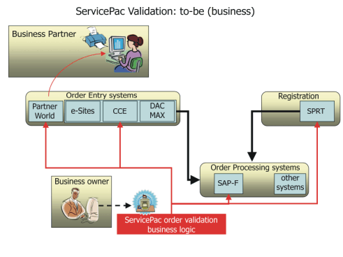
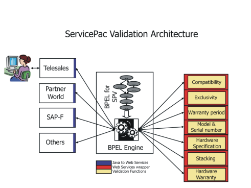
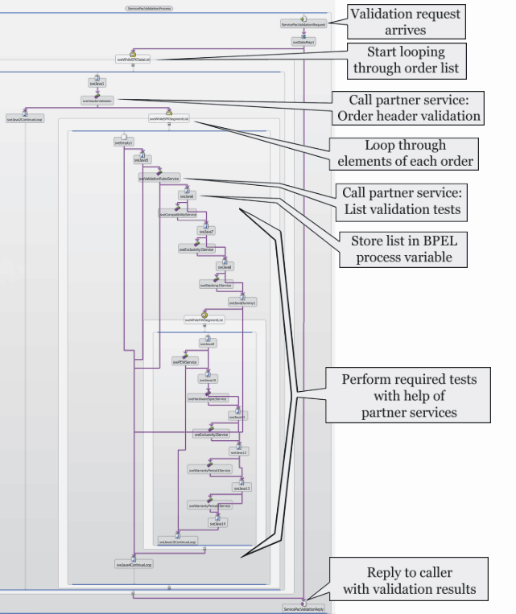

Introduction
This page describes an application that is built using BPEL based choreography in an SOA style. The lessons learned
during both the design and development phases of this project provide general insight for others considering the use of
BPEL based choreography in an SOA. The design approach is evaluated here using a Pros and Cons comparison that takes
the business requirements and the existing application elements into consideration. This page contains design
recommendations and identifies characteristics that suggest use of a BPEL driven approach.
Lessons learned
-
Choosing the right segmentation of business logic between the workflow and partner services is sometimes
challenging and always important.
The business logic is separated between workflow based choreography and the partner services. Ultimately
partner services should be responsible for computationally intensive or complex logic; whereas choreography
contains the logic that is anticipated to change in response to changing business requirements.
Since this will not always be a clean separation, a useful remediation strategy is to design the application
so it grows by modifying the workflow and adding new partner services rather than modifying existing partner
services.
This is fundamentally an iterative approach. Early prototypes are likely to require refactoring of the partner
services in order to achieve a design that can grow by addition of new partner services.
Of course, in all cases you should keep un-necessary or never-changing code out of the work flow
-
Leverage the unique capabilities of BPEL
The ability of BPEL to orchestrate partner services which expose a variety of different bindings.
Be careful not to build dependencies on the characteristics of a particular partner implementation or partner
service binding. Doing so may complicate or limit later changes to the choreography or overall
application.
Consider keeping intermediate results in BPEL variables as a strategy to improve performance
-
Where possible design partner services in a stateless manner with idempotent operations.
For the purposes of this discussion, idempotence simply means that a service can be called with the same input
data multiple times with the expectation that the response will be correct for each call. This characteristic
can provide significant simplification for both caller and service since it dramatically simplifies the
interaction. Error recovery, restart after failure, and scaling through clustering are all simplified. For the
caller, error recovery from network, server and client problems is simplified. Idempotence is a key indicator
for a potentially good match for BPEL choreography of partner services.
Of course, if more complex interactions are required, the Web Services protocols include compensation
capabilities that can be employed in such cases. All things being equal, if you can avoid such requirements in
the overall application design, the result will be easier to maintain and test.
The Case Study
This case study describes an IBM project to upgrade the information technology used by its ServicePac® business. The
goal of this project was to relieve specific pain points and position the ServicePac® business for continued expansion
in both volume and capabilities.
Like many successful businesses, IBM's ServicePac® business has gone through a sequence of incremental transitions,
starting with the combination of many distinct warranty programs into three businesses organized by geographical
sector. Later, geographically distinct operations were combined into a single world-wide operation. Over the years, the
ServicePac® business has continually added new offerings such as installation services and offerings to support new IBM
hardware. Although the ServicePac® business is itself a single world-wide operation, their product, ServicePacs®, are
sold by numerous IBM lines of business and Business Partners. Each selling organization has its own order entry systems
tailored to their particular line of business (and not to ServicePacs®). These systems represent a veritable who's-who
of different technologies built at different times by different teams.
Order entry systems that handle ServicePacs® must perform validations at order entry time based on requirements
developed by the ServicePac® business. ServicePac validation can be complex. ServicePacs® are offered in more than 100
countries and the offerings are not the same everywhere. The ServicePac® offerings vary according to product model,
country where delivered, sales channel, order entry system and customer-specific information such as currently owned
ServicePacs®.
Traditionally, ServicePac® order validation has been performed within the order entry system, implementing only those
validation requirements that are needed for the sales channels supported by that system. As the ServicePac® business
has grown, the cost of communicating the validation requirements, coordinating their development, test and deployment
has become prohibitively expensive. Furthermore, arranging for proper order validation within the ordering systems has
significantly increased the time-to-market for new offerings.

Figure 1 - services oriented approach to ServicePac® Order Validation. The approach is to make a single
service available to all order entry systems that process ServicePacs®, rather than placing specific validation logic
in each ordering system.
A Services Oriented approach to validation
Early on it was apparent that validation needed to be the responsibility of the ServicePac® business, and not each
individual sales system through which ServicePacs® are ordered. The two choices considered were to distribute code that
encapsulated the ordering validation requirements to all of the ordering systems or to provide a centralized order
validation service. Avoiding the governance issues associated with the distributed code approach was a major driver for
choosing the centralized service approach.
The greatest single benefit of exposing Order Validation as a service to order entry systems is that order entry
systems no longer need to locally implement, test or run their own ServicePac® order validation logic. Perhaps the
greatest concern (or fear) comes from the many order entry system owners who now have a new run-time dependency on an
external system operated by another organization. As you will learn below, the net benefit of providing the validation
logic as a service outweighed the concerns in this case.
Below is a quick summary of the architectural goals for the project:
-
Interface design: The validation interface needs to be designed to gracefully handle anticipated
evolution of the business (e.g. new product offerings should not in general require any interface
modifications)
-
Messaging protocol independence: The validation service should be accessible independent of the
calling platform, programming model, network transport layer, or hardware choices.
-
Business agility: The validation logic was implemented to make anticipated business changes safe,
inexpensive and quick without sacrificing performance, reliability or compromising fundamental design rules.
-
Scalability: Scaling to higher throughputs should not involve reprogramming or significant
functional test.
Interface Design
Working with the business owner and business architects of all the parties that manage product nomenclature, a
self-consistent and well-documented taxonomy was developed for the current and anticipated products. Based on the
taxonomy, an XML data model described in XML Schema language was developed that expresses all the necessary product
types along with their attributes. As new products are offered the taxonomy may change - along with potential schema
changes, however, the actual message format is expected to remain unchanged so long as the new offerings fall with the
scope of the defined taxonomy.
This approach provides the business with the desired flexibility to quickly and inexpensively introduce new offerings.
Of course, it does not cover all possible cases. For instance, if a new product offering has a precondition that has
not been anticipated in the existing message definitions then new message definitions will have to be put in place.
A simple validation request message payload that includes a single order for a single ServicePac® for a customer-owned
computer identified by its part number and serial number is shown in listing 1. The message format supports multiple
orders for multiple ServicePacs® that could be associated with both new and existing hardware. In some cases, messages
may have thousands of nested elements.
Messaging protocol independence
One of the great advantages of using BPEL is that messaging relationships between the services are described abstractly
in WSDL which provides a degree of messaging protocol independence. To take maximum advantage of this feature one must
carefully avoid building implementations that depend on specific characteristics of the messaging protocol being used
during development. For instance, if EJB bindings are being used during development, the programming style may result
in short choppy message exchanges (i.e. frequent exchange of small messages). If at a later time the binding is changed
to JMS or SOAP over HTTP there will likely be a serious performance bottleneck resulting from a larger per-message
overhead for these protocols. In this case, the impact of moving between bindings can be reduced by following a
programming style in which message exchanges are large grained (i.e. relatively infrequent exchanges of larger message
bodies) so the overhead of message creation and receipt can be amortized over more data.
<?xml version="1.0" encoding="UTF-8"?>
<spkOrderDataList>
<header>
<orderReference>1040-5124-001</orderReference>
<orderDate>2004-08-15</orderDate>
<orderingSystem>WEB</orderingSystem>
<country>US</country>
<distributionChannel>A</distributionChannel>
<headerReturnCode/>
</header>
<spkSegmentList>
<orderItemReference>102</orderItemReference>
<spkPartNumber>69P9921</spkPartNumber>
<spkType>WMAINTOPT</spkType>
<spkQuantity>1</spkQuantity>
<hardwareQuantity>1</hardwareQuantity>
<spkReturnCode/>
<hardwareSegment>
<serialNumber>77X9182</serialNumber>
<hardwareIdentifier>8676M2X</hardwareIdentifier>
<hardwareReturnCode/>
</hardwareSegment>
</spkSegmentList>
</spkOrderDataList>
</ServicePacData:validationRequest>
|
Listing 1 - Sample of a simple message received by the validation service composed of a single order for a single
ServicePac® that will be applied to an existing computer which is identified by its part number and serial number. The
validation service returns the received message annotated with either verification codes or error codes. The invoking
component can provide its own reference numbers to allow it to correlate the request and response.
Another consideration for protocol independence is messaging style. In this project future needs for asynchronous
messaging was addressed by creating validation message definitions with a (currently unexploited) field for correlating
request and response messages, even though all current usage is synchronous and therefore needs no correlation.
Addressing such concerns typically spans both the message design and the application design.
Business Agility
Fundamentally, the ServicePac® validation service accepts an order and returns information indicating whether the order
is valid or not, and if not why not. The key though, is to minimize the re-design, re-test and performance impact when
modifications need to be made in response to new business requirements. Clearly, it is useful to have an idea of what
the new requirements are likely to be when designing the initial implementation.
Initial implementation details:
The validation service extracts the ServicePac® order details consisting of: ServicePac® types, the hardware it is
destined to be applied to, the ServicePac® delivery location (country), the sales channel and the customer data.
Business logic then tests the order information against a collection of declarative statements provided by the
ServicePac® business. The set of tests that must be applied to any given order depends on the order details. Some of
the tests require access to additional data that is only available from remote systems.
There are three types of data required to validate an order: reference data owned by this application, cached reference
data owned by other systems, and live data that must be obtained from other systems each time an order is validated.
Reference data owned by this application is accessed through a partner service that was built as part of this
application. This service is also available to other applications that need access to reference data owned by this
application.
Reference data owned by other applications is provided by accessing a partner service built as part of this
application. Where possible the partner service caches the data obtained from other applications in order to minimize
the number of network accesses. By locating the caching strategy within the partner service, it can be changed as
needed over time without requiring changes to the rest of the application.
Data and intermediate results that only need to be stored during the lifetime of a validation request are stored in
BPEL variables. Using BPEL variables eliminates the overhead of avoidable accesses to partner services and therefore
may improve overall performance.

Figure 2 - topological view of the work-flow-driven implementation of the business logic that chooses
which of the computationally intensive or data intensive tests must be performed in order to validate a given order.
The same service interface is used by all of the order entry systems that need to validate orders.
At this point we switch to investigating the nature of those new requirements that can be anticipated from discussions
with the business and looking at historical trends.
As the ServicePac® business expands, new business tests for ServicePac® validation are created; however, existing tests
are not expected to be changed. Validating new products requires evaluating a new grouping of existing and possibly new
tests.
This set of requirements is a good match for a work flow driven system in which the work flow is used to knit together
sets of tests required by each product type. The aspects of the tests that are computationally or data intensive can
then be developed in less flexible but more efficient technology and rendered as partner services available to the
central workflow engine as shown in Figure 2.
When new business offerings are added the validation system the workflow itself is modified to access the existing
partner services (and possibly new partner services needed to support the new offering). Assuming the partner services
have been properly segmented at the outset, this architecture exhibits a very attractive additive mode in which new
requirements will not require much re-testing or re-coding of previously implemented function.
Scalability
Since the BPEL application is deployed atop a mature middleware stack that offers clustering as a configuration option,
moving the ServicePac® Validation project to footing that can easily scale by adding new hardware as needed was
straight forward. Of course, the overall architecture of calling partner services from a workflow engine nicely fits
the clustering model.
As a design point, this service is idempotent since calls to this service have no caller detectable side effects.
Hence, no error recovery actions need to be taken by a service consumer if a service call returns an error or fails to
complete. Indeed, the service consumer can safely re-try a call at any time. The fact that the partner services are
also idempotent significantly simplifies the factors associated with scaling the process using clustering since the
error recovery is relatively simple and recovery and restart after a failure is straight forward. Furthermore, there is
no need for "caller affinity" since each interaction is atomic and there is no caller specific caching associated with
processing a request.
The Application of Workflow and BPEL
BPEL4WS (Business Process Execution Language for Web Services) is a language and programming model specifically
designed for executing workflow based business logic that involves the choreography of web services. BPEL is an open
standard for which many vendor implementations of both authoring tools and runtimes.
The ability to describe the ServicePac® business process through a schematic process diagram and then represent the
implementation logic using the standards based BPEL4WS constructs provided just the right combination of flexibility
and isolation to implement flexible ServicePac® business logic.
For this project we chose the IBM WebSphere Application Developer Integration Edition (WSADIE) as an authoring
environment. Developed code artifacts were targeted to run on the IBM WebSphere® Business Integration Server Foundation
v5.1.1 runtime that provides a business process execution engine to subsequently execute the workflow. The data is
hosted on a DB2 (v8.1) server.
Individual tests needed for ServicePac® validation were implemented as Enterprise Java Beans, specifically Stateless
Session Beans, running in the WebSphere® Application Server EJB container. The WSADIE tooling facilitated the
integration of these EJBs as web services through the automated generation of WSDL files. As a result, the individual
tests can be deployed either within the same container as the BPEL process, or in dedicated containers on other server
instances.

Figure 3 shows a graphical BPEL editor view of the validation workflow. The tool supports collapsing
sub-processes and loops to simplify working on the details of individual pieces of the overall workflow.
Figure 3 shows the fully expanded BPEL process used to drive the ServicePac® validation services as it appears in the
WSADIE BPEL creation and editing tool.
Significant performance improvements were achieved when an early implementation of the ServicePac® validation workflow
process was modified to take advantage of using BPEL variables for holding intermediate results rather than making
additional calls to the partner service. You can see an example of this approach called out in Figure 3 where the list
of tests to be performed on each element of an order is retained in a BPEL variable.
Overall Pros & Cons of the design
|
Pros
|
Cons
|
|
1. Adding new offerings faster and less expensive
2. Adding new ordering systems is less expensive
3. Consistent comprehensive validation
4. Validation service usage can be phased in as ordering systems are updated
5. New Validation logic only needs to be implemented and tested in one place.
6. Validation logic owned by the ServicePac® business and not distributed across multiple foreign
systems.
|
1. Additional runtime cross-organizational dependencies
2. Performance overhead in the form of additional network latency
3. Requires re-engineering of existing systems
4. Created a new centralized component that can potentially act as a single point of failure for multiple
applications.
|
In the case of the ServicePac® application the advantages outlined above were found to provide significant value and
the cons were all containable. Since the individual callers are being allowed to continue private validation until they
go through a scheduled update which covers many concerns, the additional programming work of packaging up the data for
a validation call is a small increment that can be contained in the overall project scope of the calling application.
For those online services that have response time requirements that cannot be fulfilled by the validation service,
inline preliminary validation can be done by the caller - with a single final validation access to the validation
service. This strategy preserves the human factors of the calling application while at the same time preserving the
integrity of the overall ServicePac® ordering process. For some legacy systems that do not have internal web services
protocol capability, a converter was built that accepts a private protocol and converts to a web services call (a
vendor specific document to Web Services adapter was built for one of the callers in this project). Testing and
demonstration of service robustness has allayed the fears of performance bottlenecks introduced by the validation
service. By using clustering technology, the validation service throughput can be increased very quickly if the need
arises. Finally, all things being equal, the concentration of the validation logic into a single implementation means
that the money that would have been spent on deploying and testing several independent implementations can be spent
testing and deploying a single implementation which we think will more than make up for any issues associated with
having an additional single point of failure for many disparate order entry systems.
Finally, the ability of the business to take real ownership of the validation requirements and their implementation, to
roll out new offerings quickly, and to insure proper and consistent order validation at the beginning of the ordering
process has empowered the business to consider addressing new opportunities that were formerly technically unachievable
or prohibitively expensive.
|